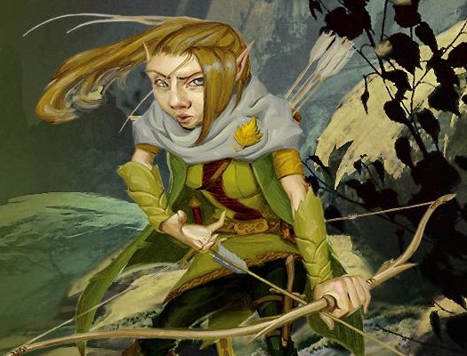

Gnome
Un bourdonnement constant d'activités imprègne les terriers et les quartiers des communautés gnomes. Et certains sons plus forts ponctuent ce bourdonnement : un craquement d'engrenages ici, une petite explosion là, un cri de surprise ou de triomphe, mais surtout des éclats de rire. Les gnomes prennent plaisir à la vie, et profitent de chaque instant, d'une invention, d'une exploration, d'une recherche, d'une création ou d'une lecture.
Expression vibrante
Mince et blond, la peau couleur noix et les yeux d'un surprenant bleu turquoise, Burgell mesurait à peine la moitié d'Aeron et devait monter sur un tabouret pour pouvoir regarder par le judas. Car comme la plupart des habitations d'Oeble, cet immeuble était construit pour les humains, et les habitants plus petits devaient faire face à cet inconfort du mieux qu'ils le pouvaient. Mais au moins, la grandeur relative de l'appartement permit à Burgell de contenir tout son équipement de gnome. La pièce de devant était son atelier, et contenait un nombre d'outils déconcertant : marteaux, ciseaux, scies, outils de crochetage, verres teintés, loupes de bijoutier, sans oublier des pots qui contenaient des ingrédients en poudre ou déchiquetés pour lancer des sorts. Un gros chat gris, le familier du magicien, était recroquevillé au sommet d'un grimoire. Il ouvrit les yeux, lança à Aeron un regard jaune dédaigneux, puis sembla retourner dormir.
- Richard Lee Byers, Le Bouquet Noir
L’énergie et l’enthousiasme des gnomes pour la vie transparaît au travers de chaque pouce de la surface de son petit corps. Les gnomes ont une taille moyenne d’un peu plus d’un mètre et un poids moyen de 20 à 23 kg. Un large sourire éclaire habituellement leur visage bronzé, hâlé, sous leur nez proéminent, et leurs yeux lumineux pétillent d’excitation. Leurs cheveux clairs ont tendance à partir dans toutes les directions, comme s’ils représentaient la grande curiosité des gnomes face à leur environnement. La personnalité d’un gnome s’affiche dans son apparence générale. La barbe d’un gnome mâle contrastera avec sa chevelure ébouriffée en étant soigneusement peignée, bien que souvent coiffée en fourche ou en pointe. Le tissu de teinte brune de leurs vêtements, bien que de qualité modeste, est souvent rehaussé de broderie ou de pierres brillantes.
Enthousiasme débordant
Pour autant que les gnomes soient concernés, être en vie est une chose merveilleuse, et ils profitent joyeusement de chaque instant de leur 300 à 500 ans d’espérance de vie. Les humains s’inquiéteraient de s’ennuyer dans une vie si longue, et les elfes prennent le temps d’apprécier les beautés du monde durant de longues années, alors que les gnomes semblent plutôt être inquiets de ne pas avoir malgré tout assez de temps pour faire ou voir tout ce qu’ils souhaiteraient. Les gnomes parlent rapidement, comme s’ils n’arrivaient pas à exprimer suffisamment vite toutes leurs pensées. Bien qu’ils donnent leur avis et idées sur nombres de sujets, ils restent à l’écoute des autres, ponctuant la discussion d’exclamations de surprise et d’appréciation. Bien qu’ils apprécient les blagues de toutes sortes, et particulièrement les calembours et les canulars, ils sont aussi appliqués lors des tâches plus sérieuses qu’ils entreprennent. De nombreux gnomes sont ingénieurs, alchimistes, bricoleurs ou des inventeurs compétents. Ils ne s’inquiètent pas de faire des erreurs et rient d’eux mêmes, n’hésitant pas à prendre des risques audacieux et à rêver en grand.
Des terriers éblouissants
Les gnomes habitent dans des terres boisées et vallonnées. Ils logent sous-terre mais prennent plus souvent l’air frais que les nains, appréciant les joies de la vie à la surface aussi souvent que possible. Leur habitat est soigneusement dissimulé par des constructions astucieuses et des illusions simples. Les visiteurs bienvenus sont rapidement conduits dans leurs terriers lumineux et chaleureux. Et ceux qui ne sont pas bienvenus auront quant à eux bien du mal à trouver les terriers en premier lieu. Les gnomes qui s’installent dans les territoires humains sont souvent des tailleurs de pierres, des ingénieurs, des sages ou des réparateurs/bricoleurs. Certaines familles humaines emploient des tuteurs gnomes, s’assurant ainsi que leurs enfants reçoivent une éducation mêlant un apprentissage sérieux et de joyeux plaisirs. Un tuteur gnome, au cours de sa longue vie, pourra s’occuper de plusieurs générations d’une famille humaine.
Noms gnomes
Les gnomes adorent les noms, et la plupart en ont plusieurs. La mère d’un gnome, mais aussi son père, ses oncles et ses tantes tout comme l’ancien du clan, lui donnent un nom, et à ceux-ci peuvent s’ajouter différents surnoms qui pourraient rester dans le temps. Les noms d’un gnome sont régulièrement des variantes de ceux d’ancêtres ou de distants cousins, mais ils peuvent aussi être une pure nouveauté. Lorsqu'ils traitent avec les humains ou d’autres races qui peuvent avoir du mal avec les noms, un gnome apprend à ne pas utiliser plus de trois de ses noms : un nom patronymique, un nom de clan et un surnom, choisissant dans chaque catégorie celui qui est le plus amusant à prononcer.
Noms masculins : Alston, Alvyn, Boddynock, Brocc, Burgell, Dimble, Eldon, Erky, Fonkin, Frug, Gerbo, Gimble, Glim, Jebeddo, Kellen, Namfoodle, Orryn, Roondar, Seebo, Sindri, Warryn, Wrenn, Zook.
Noms féminins : Bimpnottin, Breena, Caramip, Carlin, Donella, Duvamil, Ella, Ellyjobell, Ellywick, Lilli, Loopmottin, Lorilla, Mardnab, Nissa, Nyx, Oda, Orla, Roywyn, Shamil, Tana, Waywocket, Zanna.
Noms de clans : Beren, Daergel, Folkor, Garrick, Nackle, Murnig, Ningel, Raulnor, Scheppen, Timbers, Turen.
Surnoms : Sac-à-Bière, Terre Brûlée, Blaireau, Capuche, Doubletour, Chouraveur, La Flèffe, «Q», Nim, La Pompe, Pustule, Bibelot, Canard Boiteux.
Voir le monde
Curieux et impulsifs, les gnomes partent à l’aventure pour voir le monde ou pour le plaisir d’explorer. Amoureux des gemmes et d’autres objets fins, certains gnomes voient l’aventure comme une façon rapide de s’enrichir. Indépendamment de ce qui les lancent sur les routes de l’aventure, les gnomes qui adoptent ce mode de vie y prennent autant de plaisir que pour toutes autres activités qu’ils entreprendraient, parfois au grand dam de leurs compagnons d’aventures.
Traits
Votre personnage gnome possède certaines caractéristiques en commun avec tous les autres gnomes.
Augmentation de caractéristiques. Votre Intelligence augmente de 2.
Âge. Les gnomes vieillissent au même rythme que les humains, et la plupart passent à l'âge adulte aux alentours de 40 ans. Ils peuvent vivre 350 ans, voire jusqu'à 500 ans.
TOUJOURS AVENANTS
Il est rare qu’un gnome soit hostile ou maléfique, sauf s’il a subit de graves injustices. Les gnomes savent que la plupart des races n’apprécient pas leur sens de l’humour, mais ils apprécient la compagnie, comme ils apprécient toutes taches auxquelles ils s’attellent.
Taille. Les gnomes mesurent entre 90 cm et 1,20 m pour un poids aux alentours de 18 kg. Votre taille est Petite (P).
Vitesse. Votre vitesse de base est de 7,50 mètres.
Vision dans le noir. Habitué à vivre sous terre, vous avez une vision supérieure dans le noir et les conditions de faible éclairage. Vous pouvez voir à 18 mètres dans une lumière faible comme vous verriez avec une lumière vive, et dans le noir comme vous verriez avec une lumière faible. Dans le noir, vous ne discernez pas les couleurs, uniquement des nuances de gris.
Ruse gnome. Vous avez un avantage aux jets de sauvegarde d'Intelligence, de Sagesse et de Charisme contre la magie.
Langues. Vous parlez, lisez et écrivez le commun et le gnome. La langue gnome, qui utilise l'alphabet nain, est connue pour ses traités techniques et ses catalogues de connaissances sur le monde naturel.
Sous-race. Choisissez une des deux sous-races proposées ci-après.
Gnome des forêts
Les gnomes des forêts se réunissent dans des communautés cachées au sein des forêts, souvent loin des routes et des chemins de la civilisation. Timides et discrets, ces gnomes évitent la confrontation autant que possible en utilisant l'illusion et la ruse pour se cacher des menaces ou pour masquer leur fuite s'ils ont été débusqués. Les gnomes des forêts ont tendance à être amicaux avec les autres habitants des bois, et considèrent les elfes et les fées bonnes comme leurs alliés les plus importants. Ils se lient aussi d'amitié avec les petits animaux de la forêt, sur lesquels ils comptent pour obtenir des informations sur les menaces qui pourraient planer sur leurs terres.
Augmentation de caractéristiques. Votre Dextérité augmente de 1.
Illusionniste-né. Vous connaissez le sort mineur illusion mineure. L'Intelligence est votre caractéristique d'incantation pour ce sort.
Communication avec les petits animaux. À l'aide de sons et de gestes, vous pouvez communiquer des idées simples à des bêtes de taille P ou plus petite. Les gnomes des forêts aiment les animaux et traitent de manière bienveillante comme un animal domestique tout animal qu'ils peuvent trouver (écureuils, blaireaux, lapins, taupes, picidés, etc.).
Gnome des roches
GNOMES DES PROFONDEURS
Une troisième sous-race de gnome, les gnomes des profondeurs (ou svirfneblin), vivent en petites communautés éparpillées dans les Profondeurs de la Terre. A la différence des duergars et des drows, les svirfneblins sont aussi bons que leurs cousins de la surface. Cependant leur humeur et leur enthousiasme sont tempérés par l’environnement oppressant, et leur inventivité est dans la plupart des cas orientée vers le travail de la pierre.
Les gnomes des roches établissent leurs communautés dans les collines et les montagnes, là où ils peuvent avoir accès aux matériaux dont ils ont besoin pour construire et bricoler. Ces maîtres artisans sont inégalés lorsqu'on parle de tailler des gemmes ou de mécanique et autres merveilles technologiques. Leurs réalisations sont recherchées dans le monde entier.
Augmentation de caractéristiques. Votre Constitution augmente de 1.
Connaissance en ingénierie. Chaque fois que vous effectuez un jet d'Intelligence (Histoire) en relation avec l'alchimie, des objets magiques ou des dispositifs technologiques, ajoutez le double de votre bonus de maîtrise au jet, au lieu du bonus de maîtrise normal.
Bricoleur. Vous maîtrisez les outils de bricoleur. En utilisant ces outils, vous pouvez passer 1 heure et dépenser pour 10 po de matériaux pour construire un mécanisme de taille TP, de CA 5 et 1 pv. Le dispositif cesse de fonctionner après 24 heures (sauf si vous passez 1 heure à le réparer) ou si vous utilisez une action pour le démonter ; à ce moment, vous pouvez récupérer les matériaux que vous avez utilisés pour le créer. Vous pouvez avoir jusqu'à trois de ces dispositifs actifs à la fois. Lorsque vous créez un mécanisme, choisissez l'une des options suivantes :
- Allume feu. Le mécanisme produit une toute petite flamme qui peut être utilisée pour allumer une bougie ou une torche au prix d'une action.
- Boîte à musique. Lorsqu'on l'ouvre, la boîte reproduit une chanson (toujours la même) à un volume modéré jusqu'à la fin du morceau ou avant si la boîte est refermée.
- Jouet mécanique. Le jouet représente un animal ou une personne, comme une grenouille, une souris, un oiseau ou un soldat, sur des roulettes. Lorsqu'il est placé sur le sol, il se déplace de 1,50 mètre chaque tour dans une direction aléatoire et fait des bruits en fonction de la créature qu'il représente.
Traduit par papyrolf et blueace